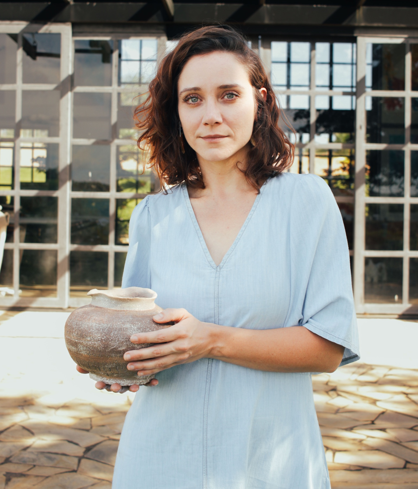

Por trás
da Kûara
Muito prazer, eu sou a Amanda. Acredito na cerâmica como uma arte popular, socioambiental e profundamente conectada aos territórios.
Sou graduada em Arquitetura e Urbanismo pela Universidade Federal de Minas Gerais, onde também concluí mestrado e doutorado em Geografia. Minha trajetória nos estudos socioambientais atravessa meu fazer artístico, sempre orientado pela pesquisa, pela valorização dos saberes tradicionais e pelo respeito às múltiplas cosmologias que habitam o barro.
Saiba mais